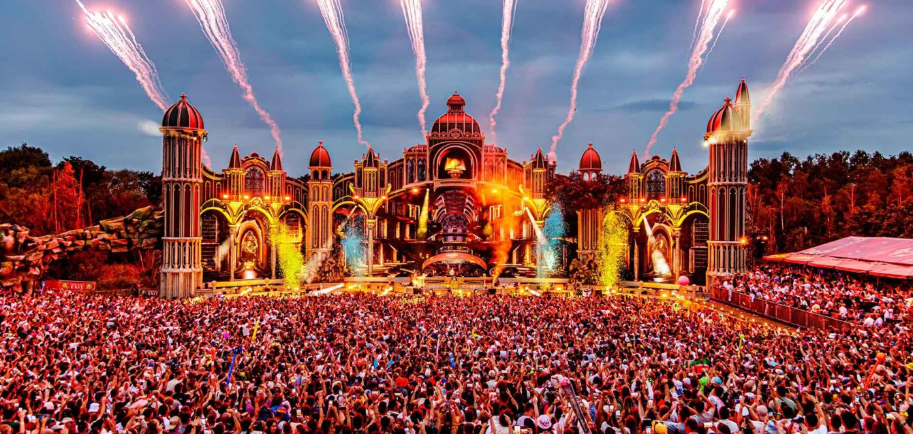
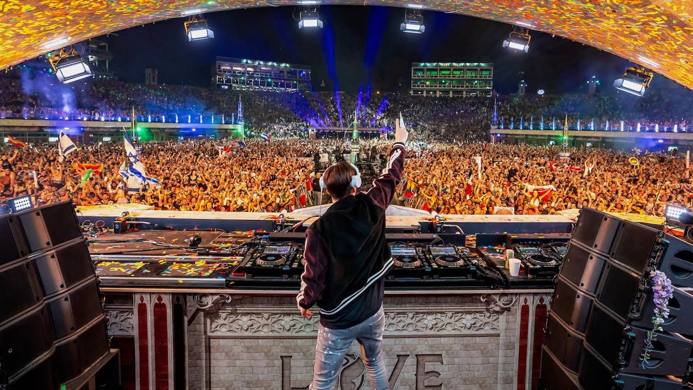

Bem Vindos a TomorrowLand
A Tomorrowland Brasil 2025 promete trazer novas experiências e atrações, como o palco CORE, que oferece uma experiência sensorial única combinando arte, tecnologia e música. O festival também celebra a vida como tema principal, com apresentações de artistas como Alok, Infected Mushoroom, Curol, Deadmau5, Vintage Culture, entre outros.
TOMORROW LAND

Australia Festival
Imagens do festival Tomorrow Land feito na Australia com os melhores DJs do mundo todo.

Dj Marshmallow
DJ Marshmello, cuja identidade real é Christopher Comstock, é um produtor e DJ de música eletrônica norte-americano, conhecido por seu estilo único que combina batidas orientadas para o groove com sintetizadores e baixos.

TomorrowLand Brasil
O Tomorrowland Brasil 2025 será lembrado não apenas pelos sets e produções incríveis, mas também como um momento de união antes do próximo capítulo brasileiro, que retorna em 2027.